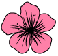

Vitajte na stránke Sakura Travels 
Vitajte na mieste, ktoré vám pomôže objaviť krásu stromov sakury v Japonsku. Sakura Travels vám poskytne informácie o najlepších miestach na pozorovanie sakúr, cestovné tipy a mnoho ďalšieho, aby ste si mohli užiť úžasnú japonskú tradíciu sledovania týchto stromov naplno.
O nás
Sakura Travels je vašou spoľahlivou spoločníčkou pri plánovaní cesty do Japonska počas obdobia kvitnutia stromov sakury. Naším cieľom je ponúknuť vám informácie o najkrajších miestach na ich pozorovanie, cestovné tipy, a príležitosť zažiť jedinečné japonské festivaly spojené s touto krásnou kvetinou.
Odporúčané destinácie
Ťuknitne a prehliadnite si naše odporúčané destinácie, kde môžete zažiť úžasný pohľad na kvitnúce sakury:
Objavte krásu sakury na týchto miestach a získajte nezabudnuteľné spomienky.
Plánujete cestu do Japonska?
Pozrite si našich cestovných sprievodcov a získajte užitočné informácie pre vašu cestu počas obdobia kvitnutia sakury.